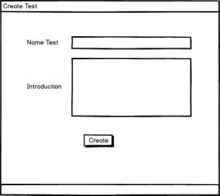

After deciding to create a test, the user must enter the test menu and choose to create a test. The user will be led to a test creation screen where the user will choose to add questions, Figure 1. This is where the user will pick which questions the will go into the test.

Figure 1: Creating a Test Screen.
The user will type keywords for the question the user wants to add in the search box at the top. There is a pulldown for advanced search options shown in Figure 2. Clicking the Go button will search.
Figure 2: Advanced Search Screen.
The user can check the boxes next to the question as shown in Figure 3 to pick which questinos the user wants in the test. The user will click enter and will be taken to the next step in the test creation flow and all selected question will be entered in the test.
Figure 3: Selecting questions screen.